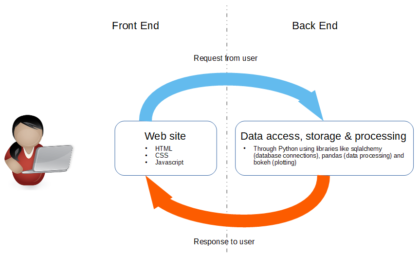
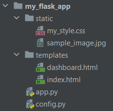

Introduction to Flask¶
Right now, web apps are a popular way to create and share your software applications with others. Recently I wanted to learn how to create one. I have started playing around with Flask, a popular web framework written in Python, to create web apps. Prior to this, the last time I dabbled with websites was 15+ years ago, using a LAMP stack for part of my PhD, so I had some residual knowledge of HTML and webpages. However, there was still a bit of a learning curve to get my web app up and running. Here I’d like to share some of my learnings so far along this journey to help others on their way to their first Flask app.
What is Flask?¶
A convenient collection of tools and resources in Python that can be used to create a web app. More specifically, it is a micro web framework - it has all the basic features required for app developement in a neat package allowing you to get your web app up and running in a short space of time. Furthermore, while Flask is light weight, it is also easily extensible with many libraries and plugins available for you to enhance your web app further.
What is a web app?¶
A web app is a software application that runs on a web server instead of running locally on your computer’s operating system. It is essentially a series of webpages that you, the user, interacts with and where data is processed.
Broadly speaking, there are two major components: i) the back end (or server side) and ii) the front end (or client side).
The backend processes and retrieves data. In a Flask app, this backend processing is done by Python.
The frontend presents a view of the data. The frontend made up of HTML, CSS and JavaScript code or files which together display a webpage or series of webpages. The user, by interacting with the webpages in the frontend, sends a request to the backend or server side. The request can be a request for data e.g. pull a specific query from a database, or a request to take data inputted by the user and process it in some way e.g store in a database or generate further data from it. The backend then sends the data, or the response, back to the frontend for viewing.
How to structure a Flask web app¶
There are lots of variations of Flask project file structures given online. One approach is below:
Some key point here are:
app.py is the name commonly given to the driver file or the file that kicks off the app.
config.py is often included and allows the app creator to define specific configuration parameters for the app like database connection details, file locations etc.
The templates folder contains the necessary HTML files for the frontend. Note that these HTML files can have shared features, like a common menu or navigation bar. Jinja is often used to re-use code between HTML files.
The static folder is a standard location for images, JavaScript files and CSS files. Javascript is a scripting language that is often used in then frontend to make webpages more dynamic and interactive for the user. CSS (Cascading Style Sheets) files are used to apply a style or format to the HTML files, and hence, create the ‘look and feel’ of webpages. Note: CSS has a vast array of formatting parameters, allowing for a really deep level of fine tuning, which is great but can take a long time. Depending on your available time and requirements for your app, it may be more convenient to download publically available style sheets for your app like Bootstrap CSS or Bulma .
The starting point - index.html¶
This is the usually entry point for a Flask app and what the user usually first sees and interacts with. From here, the user navigates through the webap, via buttons, drop-down menus, links and other interactive elements, sending information to the backend for processing.
Useful interactive elements¶
Some ways a user can interact with the webapp is through the use of:
Hyperlinks - links to other parts of the webapp or to other webpages outside your webapp using the HTML <a> tag
Drop-down menus - provide the user with a selection of options to choose from using the HTML <select> tag
Forms - A digital ‘form’ where a user can input values and submit them for processing using the HTML <form> tag.
All of the above send information from the user from the frontend to the backend for processing. W3 Schools and MDN web docs are good references sites for learning more about specific HTML tags and their attributes.
What is a route?¶
In the backend, in Flask, ‘routes’ are used to map actions i.e. Python code to map web addresses or URLs.
1 2 3 | @app.route("index.html")
def hello_world():
return "<p>Hello, World!</p>"
|
In the above code, when a request for data for index.html is triggered by the frontend, the backend uses routes to identify what needs to be done. In this case, the function hello_world() is triggered returning “Hello, World!” to the frontend for viewing.
Debugging¶
Three tools / approaches that I have found useful so far:
Using F12 to access the browser’s developer tools
Using the built-in Flask debugger
Good old fashioned print statements!
And more recently, I’ve learnt about the PyCharm Debugger, for those of you that use PyCharm to develop your code.
And that is it! Basic building blocks of a Flask app. If this has piqued your curiosity, I’d recommend you trying building your own app and give it a go.